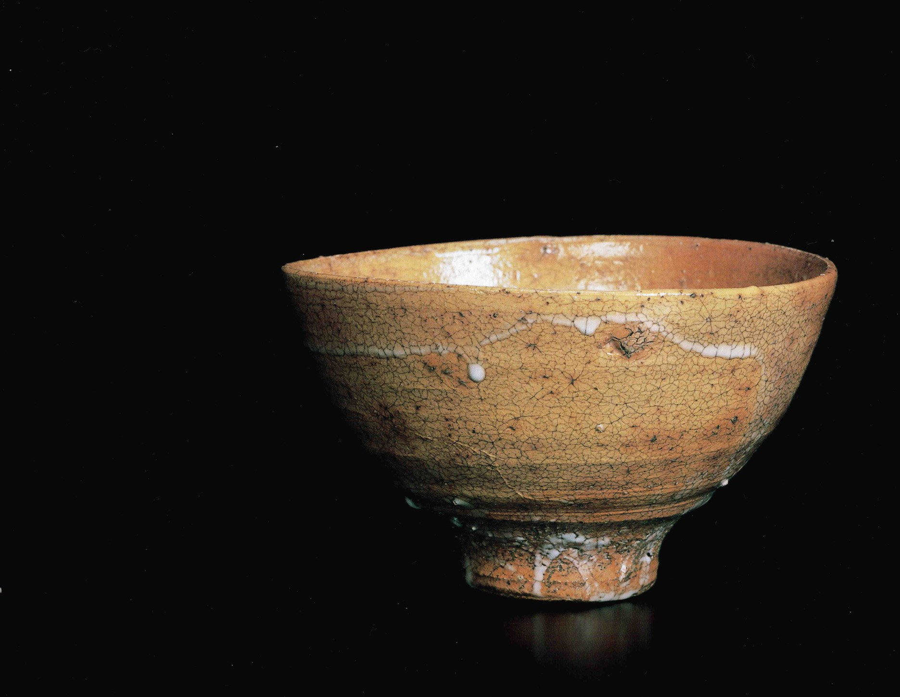

Collecting Asia/s
SCHEDULE
Friday 9/27/2013
Arrivals
Drinks at Allen Street Grill from 7-9pm for participants.
100 WEST COLLEGE AVENUE
STATE COLLEGE, PA 16801
814-231-GRIL
SATURDAY 9/28/2013
8am breakfast at symposium
9-11am Panel #1 Digital, Asian Humanities
Moderator: David Atwill, Penn State History/Asian Studies
Eric Dinmore (Hamden Sydney), “Curating and Presenting “3-11” Online: Reflections from My Year with Harvard’s Digital Archive of Japan’s 2011 Disasters”
Adeline Koh (Richard Stockton College), “On Digitizing Chinese Englishmen”
David Germano (UVA), “Tibetan Community, Culture, Collections, and Contexts: Digital Services and Participatory Approaches”
11:15-1:15 Panel #2 Collections, Archives, Books
Moderator: Tina Chen, Penn State English/Asian Studies
Nayoung Aimee Kwon (Duke), “Producers, Consumers, Collectors: The Ethnographic Turn in Colonial Culture”
Sharon Domier, (U Mass, Amherst) “Collecting China… and Giving it Back”
Jonathan Zwicker (U Michigan), “Curio Fever: Tsuboichi Shōyō and the Origins of the Waseda Theater Museum”
Andrew Leong (Northwestern) “In the Time of Exclusion: Pockets, Gold, Watches and (Japanese) Japanese American Literature”
Lunch 1:30-2:30
Sat panel #3 2:45-4:45 The Identities of Things
Moderator: Madhuri Desai, Penn State Art History/Asian Studies
Melinda Landeck (U Kansas), “Mad for Meibutsu: the Collection of Tea Utensils by Early Modern Daimyo”
Akiko Takenaka (U Kentucky), “Museumification of Memories: Collecting Testimonials and Objects of Wars in Asia”
Kenneth Shima (UCLA), “̌‘Your Spirit in Every Shard, One Nation in Every Mind’ Antiques, Materiality, and Narrating the National Self in Late 19th C. Japan”
Jennifer Hubbert (Lewis and Clark), “Collecting History: Chinese Exceptionalism at the Shanghai Expo”
Sat panel #4 Anthologizing the Classics 5-7
Moderator: Shuang Shen, Penn State Comparative Literature/Asian Studies
Elizabeth J. Markham (University of Arkansas), “For the Sake of Future Generations:” Collecting Songs, Storing Ways of Singing in Premodern Japan
Patricia Ebrey (University of Washington), “Song Court Collection”
Vivian Fumiko Chin (Mills College), “Fallen Leaves and Disseminated Proverbs: Hoarding, Loss, and Reinvention in Asian Collections and Recollections”
Dinner for participants at PLACE TBD 7:30-until
SUNDAY 9/29/2013
Sun breakfast in room starting at 8
Sun panel #5 Gender, Desire, Collection 9-11
Moderator: Christopher Reed, Penn State English/Visual Culture
Xiaorong Li (UC Santa Barbara), “Beauty without Borders: A Meiji Anthology of Classical Chinese Poems on the Beautiful Woman.”
Patricia Fister (International Research Center for Japanese Studies, Kyoto), “Probing the “Hidden” Collections of Japan’s Imperial Convents”
Doug Slaymaker (U Kentucky), “Collecting France”
John Whittier Treat (Yale U), “Orientalia, Bibliophilia, Fetish: The Erotics of the Collecting Asia”
Wrap up discussion 11:15-12:00

Details
DATE:
Penn State, Sept 27-30 2013
CONFEReNCE LOCATION:
Robeson Center Rm 330
CONFERENCE HOTEL:
Conference Organizers:
[email redacted]

Schedule
Generously supported with funds from the Penn State/Japan Foundation Global Japan Project, the Asian Studies Program, Humanities in a Digital Age, the Confucius Institute, and the Departments of History and Art History.

Collecting Asia/s
A Global Asia’s Symposium Schedule